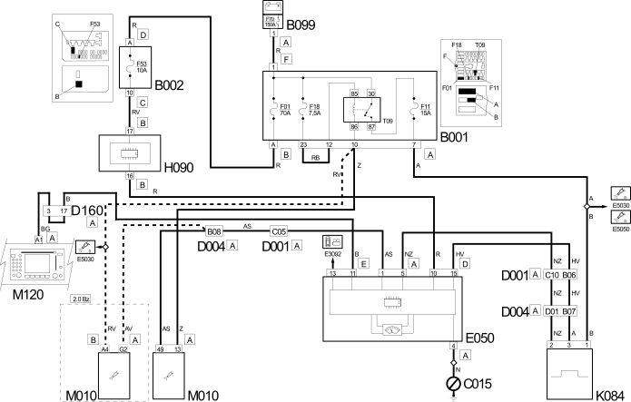

E4021 SPEEDOMETER WIRING DIAGRAM
- Path
- Electrical equipment > 1 ELECTRICAL FUNCTIONS > E40 INSTRUMENT PANEL > E4021 SPEEDOMETER > E4021 SPEEDOMETER WIRING DIAGRAM
- Kind
- topic
- Applies to
- all engines; all production periods
- Interactive page
- https://sloeber94.github.io/elrnDB-fDct/en/#/244001841
Applies to: all engines; all production periods
Wiring Diagram

Components
Component code | Description | Reference to the assembly |
|---|---|---|
JUNCTION UNIT | 5505A | |
JUNCTION UNIT UNDER DASHBOARD | - | |
MAXI FUSE BOX ON BATTERY | - | |
DASHBOARD EARTH, DRIVER'S SIDE | - | |
FRONT/DASHBOARD COUPLING | - | |
FRONT/ENGINE COUPLING | - | |
DASHBOARD/OPTIONAL DASHBOARD COUPLING | - | |
INSTRUMENT PANEL | 5560B | |
SWITCH CONTROL PANEL | 5505A | |
SPEEDOMETER SENSOR | - | |
ENGINE MANAGEMENT ECU | - | |
Connect front panel | - |
Topics linked from this page (12)
- B001 JUNCTION UNIT
- B002 JUNCTION UNIT UNDER DASHBOARD
- B099 MAXI FUSE BOX ON BATTERY
- C015 DASHBOARD EARTH, DRIVER'S SIDE
- D001 FRONT/DASHBOARD COUPLING
- D004 FRONT/ENGINE COUPLING
- D160 DASHBOARD/OPTIONAL DASHBOARD COUPLING
- E050 INSTRUMENT PANEL
- H090 SWITCH CONTROL PANEL
- K084 SPEEDOMETER SENSOR
- M010 ENGINE MANAGEMENT ECU
- M120 Connect front panel